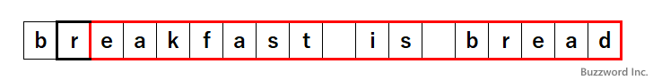

- Home ›
- 正規表現入門 ›
- 正規表現の色々な書き方
最大量指定子と最小量指定子の考え方
正規表現のパターンでアスタリスク(*)やプラス(+)などの量指定子を使用する場合、デフォルトでは最大限の文字列とマッチしようとします。このような量指定子のことを最大量指定子や欲張りな量指定子といいます。逆に最小限の文字列とマッチする量指定のことを最少量指定子や控え目な量指定子と呼びます。ここでは最大量指定子と最小量指定子が実際にどのように対象の文字列とマッチしようとするのかについて解説します。
最大量指定子がどのように文字列とマッチするのか
メタ文字の中で量指定子と呼ばれるものは、直前の文字の繰り返しを表現します。(量指定子について詳しくは「直前の文字の繰り返し：* + ? {num} {min, max}」を参照されてください)。これらの量指定子の中で {num} 以外のものは直前の文字とマッチする回数が決まっていません。
量指定子がマッチするのが対象の文字列の中で 1 つしかない場合はいいのですが、複数の箇所でマッチする場合は可能な限り最大の文字とマッチしようとします。このような量指定子のことを最大量指定子と呼びます。量指定子はデフォルトで最大量指定子です。
例として直前の文字が 1 回以上連続する文字にマッチするプラス(+)を使って実際どのように量指定子が文字列とマッチするのかを確認してみます。次のようなパターンと対象の文字列を使用してみます。
パターン ： r.+a 文字列 ： breakfast is bread
このパターンでは、最初に「r」、続いて任意の文字が 1 回以上、最後に「a」とマッチします。対象の文字列には「r」ではじまり 1 文字以上の文字を挟んで最後に「a」で終わる箇所はいくつかあります。例えば次のようなところです。
breakfast is bread breakfast is bread breakfast is bread breakfast is bread
では実際にどの部分にマッチするのかを JavaScript を使って実際に試してみます。
const regex = /r.+a/;
let result = regex.exec('breakfast is bread');
console.log(result[0]);
--> reakfast is brea
結果は次のようになりました。
✕ breakfast is bread ✕ breakfast is bread 〇 breakfast is bread ✕ breakfast is bread
このような結果となった理由は、パターンの中の「.+」の部分が最初にマッチしたところまでではなく、可能な限りの最大の文字とマッチしようとするためです。では実際にどのような手順で上記のような結果となるのかについてみていきます。
最初に対象の文字の先頭からパターン「r.+a」の中の「r」にマッチする文字を探します。
次に「.+」にマッチする文字を探します。「.+」は任意の文字が 1 文字以上続く文字列とマッチします。この時、可能な限りの最大の文字とマッチしようとするため、対象の文字列の最後までマッチします。

最後に「a」とマッチする文字を探します。既に対象の文字列の最後まで来ているので、「a」とはマッチしません。そこで、一つ前に戻って「.+」がマッチする部分を一つづつ戻しながら「a」とマッチする部分がないかを探していきます。結果として、 2 つ戻ると次の文字が「a」とマッチしました。
この結果「r.+a」とマッチする部分は対象の文字列の中の「reakfast is brea」となります。
このように最大量指定子では、最初になるべく多くの文字とマッチしようとしたあと、次のパターンがマッチするまで一つづずマッチする部分を戻していくことになります。なお戻すことができるのは、最大量指定子が一番少なくマッチするところまでです。そこまで戻って次のパターンがマッチしなければ、この文字列は正規表現パターンにマッチしないという結果になります。
最小量指定子の使い方
量指定子はデフォルトで最大量指定子として文字列とマッチします。それに対してできるだけ少ない文字とマッチする最小量指定子を利用することができます。最小量指定子を使用する場合は量指定のあとにクエスチョンマーク(?)を記述してください。
*?
+?
??
{min, max}?
例として直前の文字が 1 回以上連続する文字にマッチするプラス(+?)を使って実際どのように最小量指定子が文字列とマッチするのかを確認してみます。次のようなパターンと対象の文字列を使用してみます。
パターン ： b.+?a 文字列 ： breakfast is bread
このパターンでは、最初に「b」、続いて任意の文字が 1 回以上、最後に「a」とマッチします。対象の文字列には「b」ではじまり 1 文字以上の文字を挟んで最後に「a」で終わる箇所はいくつかあります。例えば次のようなところです。
breakfast is bread breakfast is bread breakfast is bread breakfast is bread
では実際にどの部分にマッチするのかを JavaScript を使って実際に試してみます。
const regex = /b.+?a/;
let result = regex.exec('breakfast is bread');
console.log(result[0]);
--> brea
結果は次のようになりました。
〇 breakfast is bread ✕ breakfast is bread ✕ breakfast is bread ✕ breakfast is bread
このような結果となった理由は、パターンの中の「.+?」の部分が可能な限りの最小の文字とマッチしようとするためです。では実際にどのような手順で上記のような結果となるのかについてみていきます。
最初に対象の文字の先頭からパターン「b.+?a」の中の「b」にマッチする文字を探します。
次に「.+?」にマッチする文字を探します。「.+?」は任意の文字が 1 文字以上続く文字列とマッチします。この時、可能な限りの最小の文字とマッチしようとするため、既にマッチしている「b」の次の 1 文字とマッチします。
最後に「a」とマッチするかどうかを確認します。次の文字は「e」のため「a」とはマッチしません。そこで、一つ前に戻って「.+?」がマッチする部分を一つづつ進めながら「a」とマッチする部分がないかを探していきます。結果として、 1 つ進むと次の文字が「a」とマッチしました。
この結果「b.+?a」とマッチする部分は対象の文字列の中の「brea」となります。
このように最小量指定子では、最初になるべく少ない文字とマッチしようとしたあと、次のパターンがマッチするまで一つづずマッチする部分を進めていくことになります。なお進めていくことができるのは、対象の文字列の末尾までです。そこまで進んで次のパターンがマッチしなければ、この文字列は正規表現パターンにマッチしないという結果になります。
量指定子はデフォルトでは最大量指定子としてマッチする点、そして必要に応じて量指定子にクエスチョンマークを付けた最小量指定子が利用できるという点を覚えておかれてください。
-- --
最大量指定子と最小量指定子が実際にどのように対象の文字列とマッチしようとするのかについて解説しました。
( Written by Tatsuo Ikura )

著者 / TATSUO IKURA
初心者～中級者の方を対象としたプログラミング方法や開発環境の構築の解説を行うサイトの運営を行っています。